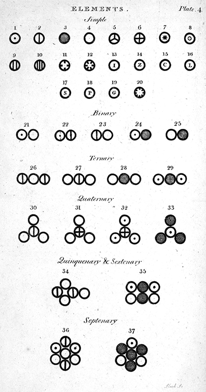
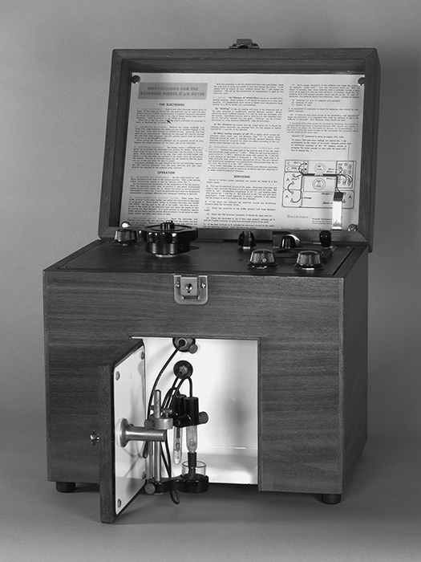

Capítulo 1 · La química en la historia
La química como empeño humano
Goethe describió la química como la ciencia que interroga a la Naturaleza con los instrumentos del experimentador (Brock 2015, cap. 1). Esa imagen resume la esencia de una disciplina que practican hoy cerca de tres millones de personas y que ha identificado más de setenta millones de sustancias (Brock 2015, cap. 1). La palabra chemist no existió, sin embargo, hasta 1834, cuando William Whewell la propuso por analogía con artist (Brock 2015, cap. 1).
La invención del término selló el paso del artesano anónimo del fuego al investigador sistemático de la materia. Al mismo tiempo, la química ocupó su lugar central entre las ciencias naturales, posición que le reconoce el propio título de la obra de Brown (Brown et al. 2012, cap. 1; Brock 2015, cap. 1). La balanza fue el instrumento que consumó esta transformación, pues convirtió la especulación sobre los materiales en una aritmética de masas verificable (Atkins 2015, cap. 1; Brock 2015, cap. 1). {#sec-quimica-artesanal}
La historia de la química es entonces la historia de cómo se aprendió a identificar sustancias, medir sus transformaciones y explicarlas con modelos que se predicen y corrigen (Brown et al. 2012, cap. 1; Brock 2015, cap. 1). Antes de los laboratorios modernos, el conocimiento químico se acumuló en talleres, boticas y cocinas. Después se organizó en leyes ponderales, tablas periódicas y teorías atómicas, y finalmente se expandió hacia instrumentos electrónicos y síntesis planificada (Brock 2015, cap. 1; Atkins 2015, cap. 1).
La química artesanal
Las primeras sustancias identificadas aparecen en excavaciones de Egipto, Persia y Mesopotamia desde el quinto milenio antes de nuestra era (Brock 2015, cap. 2). El natrón, sal común impura extraída de lagos secos o de la evaporación del agua del Nilo, se usó en embalsamamiento y conservación de alimentos (Brock 2015, cap. 2). Las recetas de perfumes apenas han cambiado en milenios: su ingrediente básico ha sido siempre el glicerol, un alcohol azucarado viscoso (Brock 2015, cap. 2).
Plinio, en su Historia Natural del siglo primero, registró la tecnología romana que explotaba el alga Dunaliella salina, capaz de crecer en el ambiente hostil de las salinas. Los romanos la llamaban flos salis, flor de sal, y de sus células rojas extraían glicerol y betacaroteno, el precursor de la vitamina A (Brock 2015, cap. 2). Ambos productos siguen extrayéndose hoy de la misma alga como base de perfumes coloreados (Brock 2015, cap. 2).
El dominio del fuego fue la precondición de estos logros, pues sin él no habría habido alfarería, vidrio ni extracción de metales. Hogares arqueológicos datados en 230.000 años muestran que varias especies de homínidos aprendieron a crear, controlar y propagar el fuego (Brock 2015, cap. 2). Hacia el año 8000 antes de nuestra era, la fermentación de granos ya producía pan, cerveza y vino (Brock 2015, cap. 2).
El control del fuego y la temperatura dio paso a las primeras tecnologías químicas: la alfarería a partir de arcillas cocidas, los metales, el vidrio, el betún y el yeso (Brock 2015, cap. 2). El asfalto mesopotámico, mezcla de alquitrán natural con caliza, arena y grava, servía como sellador en viviendas y barcos. El yeso de caliza permitía fabricar grandes bloques de construcción (Brock 2015, cap. 2).
La teoría atómica y las leyes ponderales
La química cuantitativa nació cuando la balanza acompañó a los análisis cualitativos y planteó la pregunta por las proporciones. En 1792, Benjamin Richter demostró que al neutralizar ácidos con bases se requerían cantidades determinadas de ácido para cada peso fijo de base; ese peso fijo o equivalente definía la reacción (Brock 2015, cap. 9). La ley de proporciones fijas, defendida por Joseph Proust frente a la idea de proporciones variables de Berthollet, estableció que los elementos se combinan en razones constantes por masa (Brock 2015, cap. 9; Brown et al. 2012, sec. 2.1).
Sobre ese andamiaje empírico, John Dalton construyó su teoría atómica: la materia es particulada, cada elemento tiene átomos de masa característica y los compuestos se forman combinando átomos en proporciones fijas (Brown et al. 2012, sec. 2.1; Pauling 1988, cap. 2; Brock 2015, cap. 9). La teoría explicaba la ley de composición constante, la ley de conservación de la masa y la ley de las proporciones múltiples: si dos elementos forman más de un compuesto, las masas de uno que se combinan con una masa fija del otro están en razón de números enteros pequeños (Brown et al. 2012, sec. 2.1; Pauling 1988, cap. 2; Brock 2015, cap. 9).

Nota. Figura reproducida de (Brock 2015, il. 9), © Oxford University Press (2015), reutilizada con fines educativos de estudio propio. Cortesía: Roy G. Neville Collection, Othmer Library of Chemical History, Chemical Heritage Foundation.
Dalton llegó a la teoría partiendo de la meteorología al preguntarse por qué la atmósfera, formada por varios gases, no se estratifica por peso (Brock 2015, cap. 9). La figura Figura 2.1 reproduce los símbolos con que representó los elementos conocidos en su New System of Chemical Philosophy (Brock 2015, fig. 9).
Su respuesta apeló a partículas de cada gas que se repelen entre sí pero no interactúan entre especies, la ley de las presiones parciales de Dalton (Brock 2015, cap. 9; Pauling 1988, cap. 9). Para explicar por qué los gases se disuelven de modo distinto en agua, concluyó que los átomos de elementos distintos tienen tamaños diferentes, y el cálculo de esos tamaños requirió pesos atómicos (Brock 2015, cap. 9; Brown et al. 2012, sec. 2.1).
Alrededor de 1804, el cálculo de pesos atómicos relativos se convirtió en una base cuantitativa nueva para toda la química, publicada primero por Thomas Thomson en 1807 y luego por Dalton en 1808 (Brock 2015, cap. 9). Los problemas metodológicos de su sistema no se resolvieron hasta Cannizzaro en los años cincuenta del siglo XIX, y la estructura del átomo real esperó a Rutherford y Soddy en el siglo veinte (Brock 2015, cap. 9; Brown et al. 2012, sec. 2.1; Pauling 1988, cap. 2).
La diversificación: química orgánica e inorgánica
La revolución química del siglo XVIII reorganizó la disciplina en torno a problemas de clasificación. Antoine Fourcroy, discípulo de Lavoisier, fue el primero en demostrar que la variedad de compuestos extraídos de plantas y animales contiene solo unos pocos elementos: carbono, hidrógeno, oxígeno y nitrógeno, y ocasionalmente azufre y fósforo (Brock 2015, cap. 11; Brown et al. 2012, cap. 24).
Fourcroy dividió la química en los dos grandes dominios de inorgánica y orgánica; este último término designó hasta la década de 1830 las sustancias extraídas de los seres vivos (Brock 2015, cap. 11). Como los químicos prepararon tantos derivados que no existían en el mundo vivo, el término adquirió un sentido más amplio. Solo en 1858 Friedrich Kekulé definió la química orgánica como la química de los compuestos de carbono (Brock 2015, cap. 11; Brown et al. 2012, cap. 24; Pauling 1988, cap. 23).
Los químicos del siglo XIX imaginaron átomos y construyeron modelos atómicos y moleculares que ayudaron a crear una disciplina académica e industrialmente significativa. La «química de papel» y los mundos moleculares imaginados sirvieron a sus estudios y a su progreso (Brock 2015, cap. 11). Estos modelos serían la puerta de entrada a la química estructural del siglo siguiente (Brock 2015, cap. 11; Pauling 1988, cap. 6).
La periodicidad: Mendeleev
El orden llegó a la química inorgánica por una vía paralela a la que la teoría de valencia dio a la orgánica (Brock 2015, cap. 14). En el primer congreso internacional de químicos, celebrado en Karlsruhe en 1860, Cannizzaro recomendó adoptar la hipótesis de Avogadro: volúmenes iguales de gases a la misma temperatura y presión contienen el mismo número de moléculas (Brock 2015, cap. 14; Pauling 1988, cap. 5). Solo con esa regla fue posible una lista acordada de pesos atómicos, y con ella pudo trabajar Mendeleev (Brock 2015, cap. 14; Brown et al. 2012, cap. 7).
Dmitri Mendeleev buscaba una forma de estructurar un libro de texto en 1869 cuando dio con la ley periódica: los elementos ordenados según el valor de sus pesos atómicos muestran una alteración escalonada de sus propiedades, de modo que los elementos químicamente análogos, como los metales alcalinos o los halógenos, caen en grupos naturales (Brock 2015, cap. 14; Brown et al. 2012, cap. 7; Pauling 1988, cap. 5).
Los químicos prestaron poca atención a la tabla hasta que las predicciones de Mendeleev sobre elementos desconocidos se confirmaron: el galio en 1875 y el escandio en 1879 (Brock 2015, cap. 14; Brown et al. 2012, cap. 7). La tabla periódica resume relaciones entre los elementos que permiten inferir propiedades de unas decenas de sustancias a partir de su posición (Atkins 2015, cap. 2; Brown et al. 2012, cap. 7).
Oxígeno y azufre resultaron primos vecinos; nitrógeno y fósforo también; cobre, plata y oro quedaron en la misma familia (Atkins 2015, cap. 2; Brown et al. 2012, cap. 7). Sus apariencias tan distintas resultaron diferencias superficiales frente a profundas semejanzas químicas, que se comprendieron plenamente cuando se explicó la estructura electrónica de los átomos (Atkins 2015, cap. 2; Brown et al. 2012, cap. 6; Pauling 1988, cap. 5).
Termodinámica: energía, entropía y entalpía
La termodinámica química comenzó con la termoquímica del siglo XVIII. Joseph Black mostró que distintas sustancias tienen calores específicos diferentes y que fundir un sólido o hervir un líquido requiere grandes cantidades de calor que no registra el termómetro, los llamados calores latentes de fusión y de vaporización (Brock 2015, cap. 17; Brown et al. 2012, cap. 5).
Pierre Dulong y Alexis Petit encontraron en esos calores una relación empírica útil: el peso atómico de un elemento multiplicado por su calor específico es igual a 6,4, lo que sirvió para determinar pesos atómicos, como demostró Berzelius (Brock 2015, cap. 17; Brown et al. 2012, cap. 5). En los años 1840, Rudolf Clausius estableció la primera ley de la termodinámica: cuando se realiza trabajo mediante calor, se consume una cantidad de calor proporcional al trabajo hecho, y el gasto equivalente de trabajo produce una cantidad igual de calor (Brock 2015, cap. 17; Atkins 2015, cap. 3; Brown et al. 2012, cap. 19).
Clausius entendió el calor como movimiento mecánico de partículas y percibió el cambio químico como disociación en la que el calor separa las moléculas venciendo sus afinidades (Brock 2015, cap. 17). Entre 1838 y 1840, Germain Hess mostró que el calor liberado en una reacción, más tarde llamado entalpía, es constante tanto si la reacción ocurre en un solo paso como en varios; esta es la ley de Hess, consecuencia directa de la conservación de la energía (Brock 2015, cap. 17; Brown et al. 2012, cap. 5; Atkins 2015, cap. 3).
Los químicos tardaron en adoptar la segunda ley porque no comprendían la entropía; incluso la obra de Gibbs, con sus setecientas ecuaciones sobre el equilibrio, pareció incomprensible a Clerk Maxwell (Brock 2015, cap. 17; Atkins 2015, cap. 3). La idea de Boltzmann de describir el movimiento de las partículas de un gas por promedios estadísticos permitió interpretar la entropía como desorden: cuanto mayor es la entropía, mayor es el desorden molecular, y la entropía es la fuerza impulsora de las reacciones químicas (Brock 2015, cap. 17; Atkins 2015, cap. 3; Brown et al. 2012, cap. 19).
Solo en 1923, el libro Thermodynamics de Gilbert N. Lewis y Merle Randall estableció una notación consistente y popularizó la energía libre, el máximo de trabajo extraíble de un proceso químico (Brock 2015, cap. 17; Atkins 2015, cap. 3; Brown et al. 2012, cap. 19). En 1909, Kamerlingh Onnes sugirió llamar entalpía («calor dentro», del griego) a la porción de energía producida entre puntos de temperatura acordados; el término se difundió desde los años cincuenta (Brock 2015, cap. 17; Brown et al. 2012, cap. 5).
Desde los años sesenta, la termodinámica se resume en las «tres e», simbolizadas por G (energía libre, por Gibbs), S (entropía, probablemente por Sadi Carnot) y H (entalpía, por la ley de Hess) (Brock 2015, cap. 17; Brown et al. 2012, cap. 19). Esta notación sigue vigente en los tratados actuales y la retomaremos en los capítulos dedicados a la termoquímica y la termodinámica química (Brock 2015, cap. 17; Brown et al. 2012, cap. 19).
La revolución instrumental
El creador de herramientas más influyente del siglo veinte fue Arnold Beckman, quien en 1934 patentó el pH-metro portátil que calculaba la acidez electrónicamente (Brock 2015, cap. 18; Brown et al. 2012, cap. 16). La escala logarítmica de pH había sido introducida en 1909 por el bioquímico danés Søren Sørensen; el pH significaba «potencial de iones hidrógeno», con cero para la acidez extrema y catorce para la basicidad extrema (Brock 2015, cap. 18; Brown et al. 2012, cap. 16). {#sec-revolucion-instrumental}
Medir el pH exigía análisis volumétricos complicados fuera de sitio hasta que Beckman, al abandonar la academia, fundó una compañía que fabricó pH-metros y espectrofotómetros de absorción para la industria alimentaria (Brock 2015, cap. 18). La espectroscopia infrarroja había comenzado a fines del siglo XIX, cuando dos ex oficiales del ejército británico correlacionaron espectros infrarrojos con grupos funcionales; el físico estadounidense William Coblentz publicó datos de más de un centenar de moléculas orgánicas (Brock 2015, cap. 18; Brown et al. 2012, cap. 24). La figura Figura 2.2 muestra ese Model G pionero de la instrumentación química (Brock 2015, fig. 17).

Nota. Figura reproducida de (Brock 2015, il. 17), © Oxford University Press (2015), reutilizada con fines educativos de estudio propio. Cortesía: Beckman Coulter Heritage Council, Chemical Heritage Foundation.
Sin embargo, esos hallazgos no llevaron a usar la espectroscopia en determinaciones estructurales hasta los años treinta, cuando los químicos del petróleo necesitaron identificar rápidamente las fracciones de la destilación (Brock 2015, cap. 18; Brown et al. 2012, cap. 24). La espectroscopia infrarroja se volvió esencial cuando las guerras mundiales impulsaron el paso del carbón al petróleo como materia prima de la industria química (Brock 2015, cap. 18).
La adopción de la espectroscopia ultravioleta e infrarroja, la resonancia magnética nuclear y la espectrometría de masas transformó los compuestos en un arte abstracto de líneas o curvas espectrales producido por máquinas electrónicas (Brock 2015, cap. 18; Brown et al. 2012, cap. 24; Pauling 1988, cap. 25). Estos instrumentos cambiaron la enseñanza: en Francia, las teorías de la estructura atómica y la tabla periódica solo aparecieron en las escuelas secundarias en 1978 (Brock 2015, cap. 18).
Los laboratorios escolares se rediseñaron y los programas se reconstruyeron con mayor énfasis en química física, estructura electrónica y química cuántica (Brock 2015, cap. 18; Brown et al. 2012, cap. 6). La síntesis dejó de ser una confirmación tediosa de estructuras posibles para convertirse en una vía lógica de determinar estructuras y diseñar materiales nuevos (Brock 2015, cap. 18). Los instrumentos físicos abrieron la posibilidad de entender rutas bioquímicas y revelar la extensión de la contaminación, permitiendo legislar y monitorear los productos peligrosos (Brock 2015, cap. 18; Atkins 2015, cap. 6).
La química contemporánea
El epílogo de la historia química del siglo veinte está marcado por descubrimientos sorprendentes. En 1985 se mostró que el carbono tiene una forma alotrópica distinta del grafito, el diamante y el carbón: una molécula de sesenta átomos con forma de balón de fútbol, llamada buckminsterfullereno en honor del arquitecto de la cúpula geodésica; sus derivados cilíndricos, los nanotubos, fueron objeto de mucha investigación sintética (Brock 2015, cap. 19; Brown et al. 2012, cap. 24). {#sec-fullereno-grafeno}
En 2003 se preparó una forma de grafito de una sola capa de átomos, el grafeno, con notables propiedades de conducción eléctrica, ya empleado en materiales ultraligeros y semiconductores más rápidos; por analogía se formaron también fósforeno, siliceno, germaneno y arseneno (Brock 2015, cap. 19; Brown et al. 2012, cap. 24). La nanotecnología, la manipulación de la materia a escala atómica o molecular, confiere a los materiales nuevas propiedades ópticas, eléctricas y estructurales, y dio origen a la ciencia de materiales (Brock 2015, cap. 19; Atkins 2015, cap. 7).
También se expandió el poder de la síntesis. En los años noventa, las compañías farmacéuticas desarrollaron la química combinatoria, que reacciona múltiples ingredientes a la vez para crear enormes «bibliotecas» de compuestos que luego se examinan como posibles fármacos (Brock 2015, cap. 19; Brown et al. 2012, cap. 24). E. J. Corey introdujo la retrosíntesis: descomponer la molécula deseada en moléculas más simples ya conocidas, cuyo conocimiento permite planear la síntesis completa (Brock 2015, cap. 19; Brown et al. 2012, cap. 24).
El detector de captura electrónica en miniatura de James Lovelock, de los años cincuenta, reveló la magnitud de la contaminación y sus efectos sobre la capa de ozono y el clima, mientras la percepción pública oscilaba entre el progreso y los desastres, como la explosión de Bhopal en 1984 (Brock 2015, cap. 19; Atkins 2015, cap. 6).
Pese al debate sobre si la química se ha disuelto en bioquímica, biotecnología, nanotecnología y ciencia de materiales, los químicos prefieren verla insistentemente como la ciencia central del conocimiento material (Brock 2015, cap. 19; Brown et al. 2012, cap. 1; Atkins 2015, cap. 1). Como dijo Liebig en los años cuarenta del siglo XIX, «Alles ist Chemie»: todo es química (Brock 2015, cap. 19; Brown et al. 2012, cap. 1).
Ejemplo resuelto: la ley de Dulong y Petit
La ley empírica de Dulong y Petit afirma que el peso atómico de un elemento multiplicado por su calor específico es igual a 6,4, cuando el calor específico se expresa en calorías por gramo y grado (Brock 2015, cap. 17; Brown et al. 2012, cap. 5). Supongamos que un elemento desconocido tiene un calor específico de 0,128 cal/(g·°C); para estimar su peso atómico se divide 6,4 entre 0,128, lo que da 50 como peso atómico aproximado (Brock 2015, cap. 17; Brown et al. 2012, cap. 5).
Si el análisis químico indica que el equivalente gramo del elemento ronda los 49,5, el peso atómico más coherente con la relación es un múltiplo pequeño del equivalente, en este caso el propio equivalente (Brock 2015, cap. 17; Brown et al. 2012, cap. 5). La utilidad histórica de la relación fue permitir a Berzelius y sus contemporáneos fijar pesos atómicos que hoy damos por establecidos (Brock 2015, cap. 17; Brown et al. 2012, cap. 5).
Preguntas y ejercicios de consolidación
Los ejercicios que siguen están inspirados en la tipología de Brock (2015) (caps. 1-3, 9, 11, 14, 17-19); los valores numéricos, los contextos y los escenarios planteados son originales de este libro, de modo que cada enunciado puede reescribirse, re-calcularse y verificarse sin recurrir al texto fuente, y todo solucionario explica el procedimiento paso a paso.
Explique por qué el control del fuego constituyó la precondición de las primeras tecnologías químicas y enumere, en prosa, las aplicaciones materiales que de él derivaron en las civilizaciones antiguas (Brock 2015, cap. 2). ¿Qué diferencia conceptual separa la ley de proporciones fijas de Proust de la teoría atómica de Dalton, y qué papel jugó la ley de las presiones parciales en el razonamiento que llevó a Dalton a los pesos atómicos relativos (Brock 2015, cap. 9; Brown et al. 2012, sec. 2.1; Pauling 1988, cap. 2)?
Describa cómo la recomendación de Cannizzaro en Karlsruhe en 1860 hizo posible la ley periódica de Mendeleev y explique por qué la tabla no fue aceptada hasta que se confirmaron las predicciones del galio y el escandio (Brock 2015, cap. 14; Brown et al. 2012, cap. 7; Pauling 1988, cap. 5). Relacione la ley de Hess con la primera ley de la termodinámica y explique por qué la entropía, tal como la interpretó Boltzmann, se convirtió en la fuerza impulsora de las reacciones químicas (Brock 2015, cap. 17; Brown et al. 2012, cap. 5; 2012, cap. 19; Atkins 2015, cap. 3).
¿Cómo transformó la revolución instrumental la enseñanza de la química y qué nueva relación estableció entre la investigación académica y el financiamiento industrial y gubernamental (Brock 2015, cap. 18; Brown et al. 2012, cap. 6; 2012, cap. 16; Atkins 2015, cap. 6)? Considere el caso del grafeno y argumente, con los datos del capítulo, por qué su descubrimiento replantea la propia definición de elemento químico (Brock 2015, cap. 19; Brown et al. 2012, cap. 24; Atkins 2015, cap. 7). Estime, con la ley de Dulong y Petit, el peso atómico de un elemento cuyo calor específico es 0,16 cal/(g·°C) y comente la fiabilidad de la estimación (Brock 2015, cap. 17; Brown et al. 2012, cap. 5).
Soluciones y respuestas explicadas
El fuego permitió calentar los materiales hasta fundirlos o transformarlos, y sin ese control no existirían la alfarería, el vidrio, la extracción de metales ni la elaboración de betún y yeso (Brock 2015, cap. 2). La ley de Proust describe un hecho observado, la constancia de las proporciones en que se combinan los elementos; la teoría de Dalton explica ese hecho postulando átomos indivisibles que se combinan en razones fijas (Brock 2015, cap. 9; Brown et al. 2012, sec. 2.1; Pauling 1988, cap. 2).
Dalton llegó a los pesos atómicos al querer explicar la homogeneidad atmosférica y las solubilidades distintas de los gases: su modelo autorrepulsivo de especies independientes exigía tamaños atómicos diferentes, y el cálculo de tamaños requirió pesos y densidades (Brock 2015, cap. 9; Brown et al. 2012, sec. 2.1; Pauling 1988, cap. 2). En Karlsruhe, la recomendación de adoptar la hipótesis de Avogadro produjo una lista única de pesos atómicos, sin la cual Mendeleev no habría podido ordenar los elementos; la tabla se ignoró hasta que el galio (1875) y el escandio (1879) confirmaron sus predicciones (Brock 2015, cap. 14; Brown et al. 2012, cap. 7; Pauling 1988, cap. 5).
La ley de Hess dice que el calor de reacción no depende del camino; como la energía no se crea ni se destruye, el calor total intercambiado entre los mismos estados inicial y final debe ser el mismo, de modo que Hess es un corolario de la primera ley (Brock 2015, cap. 17; Brown et al. 2012, cap. 5; Atkins 2015, cap. 3). Boltzmann interpretó la entropía como desorden molecular y mostró que los procesos naturales tienden a estados más probables y más desordenados, lo que identifica a la entropía como motor de los cambios químicos (Brock 2015, cap. 17; Brown et al. 2012, cap. 19; Atkins 2015, cap. 3).
La revolución instrumental hizo que la interpretación de los datos dependiera de la mecánica cuántica, desplazó a los métodos húmedos y secos tradicionales, y encareció tanto los equipos que la investigación académica pasó a depender del apoyo industrial y gubernamental (Brock 2015, cap. 18; Brown et al. 2012, cap. 6; 2012, cap. 16; Atkins 2015, cap. 6). El grafeno es una forma de una sola capa atómica de grafito, con análogos de fósforo, silicio, germanio y arsénico; si un «elemento» admite variedades de una sola capa con propiedades tan distintas, el significado mismo de la palabra queda en cuestión (Brock 2015, cap. 19; Brown et al. 2012, cap. 24; Atkins 2015, cap. 7).
Para el cálculo final, la relación de Dulong y Petit se resuelve con la misma regla del ejemplo resuelto: dividir 6,4 entre 0,16 da 40, valor aproximado que orienta pero no identifica el elemento, pues la ley empírica admite una pequeña incertidumbre (Brock 2015, cap. 17; Brown et al. 2012, cap. 5). La estimación debe contrastarse con el equivalente gramo que arroja el análisis químico antes de proponer un peso atómico definitivo (Brock 2015, cap. 17; Brown et al. 2012, cap. 5).
Resumen del capítulo
La química nació como oficio artesanal y se convirtió en ciencia cuantitativa cuando la balanza permitió formular leyes ponderales, que Dalton explicó mediante su teoría atómica (Brock 2015, cap. 9; Brown et al. 2012, sec. 2.1; Pauling 1988, cap. 2). La división entre química orgánica e inorgánica, la ley periódica de Mendeleev y la termodinámica de Hess, Gibbs, Clausius y Boltzmann dieron orden y predictibilidad a la disciplina (Brock 2015, cap. 11; 2015, cap. 14; 2015, cap. 17; Brown et al. 2012, cap. 7; 2012, cap. 5; 2012, cap. 19; Atkins 2015, cap. 2; 2015, cap. 3).
La revolución instrumental del siglo veinte, con el pH-metro de Beckman, la espectroscopia y la resonancia magnética, transformó la práctica y la enseñanza (Brock 2015, cap. 18; Brown et al. 2012, cap. 16; 2012, cap. 24). Los descubrimientos del fullereno, el grafeno y la nanotecnología confirman que la química sigue ampliando su frontera y que, como afirmó Liebig, todo es química (Brock 2015, cap. 19; Brown et al. 2012, cap. 1; Atkins 2015, cap. 1; 2015, cap. 7).
Autoevaluación
Este capítulo introduce los hitos históricos que estructuran el lenguaje y la motivación conceptual del libro. Verifique que puede: explicar cómo la balanza transformó la especulación en aritmética de masas (?sec-balanza); distinguir la ley de Proust de la teoría de Dalton y el papel de la ley de presiones parciales (?sec-ley-proporciones-fijas, ?sec-teoria-atomica-dalton, ?sec-ley-presiones-parciales); describir la recomendación de Cannizzaro y las predicciones de Mendeleev (?sec-ley-periodica-mendeleev, ?sec-pesos-atomicos); relacionar la ley de Hess con la primera ley y la entropía de Boltzmann como motor químico (?sec-ley-hess, ?sec-entropia-boltzmann); y argumentar por qué el grafeno cuestiona la definición de elemento (?sec-grafeno, ?sec-ciencia-central).
Enlace al próximo capítulo
El capítulo 2 aborda la materia y su medición: propiedades físicas y químicas, unidades SI, cifras significativas, análisis dimensional y densidad. Estos conceptos operativos serán la base cuantitativa de todo lo que sigue, apoyándose en la materia (?sec-materia) y las leyes ponderales (?sec-ley-proporciones-fijas) establecidas aquí.
Glosario acumulativo
- balanza: instrumento de medida de masa que convirtió la química en ciencia cuantitativa.
- natrón: sal impura (carbonato de sodio hidratado) usada en el antiguo Egipto.
- glicerol: alcohol trivalente (propano-1,2,3-triol), componente de perfumes y lípidos.
- flos salis: «flor de sal», nombre romano para Dunaliella salina.
- alfarería: tecnología cerámica basada en arcilla cocida.
- metales: elementos con enlace metálico, maleables y conductores.
- vidrio: sólido amorfo de sílice, álcalis y óxidos.
- betún: mezcla asfáltica natural usada como sellador.
- yeso: sulfato de calcio hidratado, material de construcción.
- equivalente: peso fijo de base que reacciona con una cantidad definida de ácido.
- ley de proporciones fijas: los elementos se combinan en razones de masa constantes (Proust, 1799).
- teoría atómica de Dalton: materia particulada, átomos de masa característica, compuestos en proporciones fijas.
- ley de conservación de la masa: la masa no cambia en reacción química (Lavoisier, 1785).
- ley de proporciones múltiples: masas en razón de enteros pequeños para compuestos múltiples de dos elementos.
- ley de presiones parciales de Dalton: la presión total es la suma de las presiones parciales de cada gas.
- química orgánica: química de los compuestos de carbono (Kekulé, 1858).
- química inorgánica: química de los elementos no carbono.
- ley periódica: propiedades escalonadas al ordenar elementos por peso atómico (Mendeleev, 1869).
- pesos atómicos: masas relativas de átomos, base de la tabla periódica.
- termoquímica: estudio del calor en reacciones químicas (siglo XVIII).
- calores específicos: calor para elevar 1 g un grado; varían por sustancia (Black).
- calores latentes: calor de cambio de fase sin cambio de temperatura (Black).
- primera ley de la termodinámica: conservación de la energía (Clausius, 1840s).
- entalpía: calor de reacción a presión constante (Hess, 1840; término Onnes, 1909).
- ley de Hess: calor de reacción independiente del camino (consecuencia de la primera ley).
- entropía: medida del desorden molecular; motor de reacciones (Boltzmann, 1870s).
- energía libre de Gibbs: trabajo máximo extraíble (Gibbs, 1870s; Lewis & Randall, 1923).
- pH-metro: instrumento electrónico de medida de acidez (Beckman, 1934).
- espectroscopia infrarroja: correlación espectros-grupos funcionales (Coblentz, 1900s).
- resonancia magnética nuclear: técnica estructural por spin nuclear.
- espectrometría de masas: análisis por relación masa/carga de iones.
- buckminsterfullereno: C₆₀, alótropo esférico del carbono (1985).
- nanotubos: cilindros de carbono derivados del fullereno.
- grafeno: capa monoatómica de grafito, conductor excepcional (2003).
- nanotecnología: manipulación de materia a escala atómica/molecular.
- química combinatoria: síntesis paralela de bibliotecas de compuestos (1990s).
- retrosíntesis: planificación sintética desde la meta hacia precursores (Corey, 1990s).
- ciencia central: la química como base del conocimiento material (Liebig).